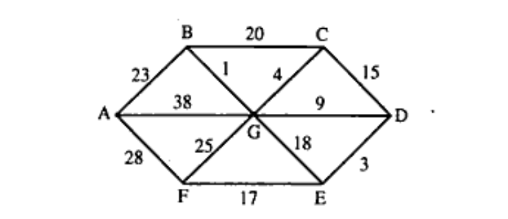

Rajiv Gandhi Proudyogiki Vishwavidyalaya, Bhopal
New Scheme Based On AICTE Flexible Curricula
CSE-Artificial Intelligence and Machine Learning | III-Semester
Unit 1: Introduction to Data Structures, Arrays & Linked Lists
Introduction to Data Structure: Concepts of Data and Information, Classification of Data structures, Abstract Data Types, Implementation aspects: Memory representation. Data structures operations and its cost estimation. Introduction to linear data structures- Arrays, Linked List: Representation of linked list in memory, different implementation of linked list. Circular linked list, doubly linked list, etc. Application of linked list: polynomial manipulation using linked list, etc.
Previous Years questions appears in RGPV exam.
Q.1) What do you mean by data structure and mention its types? (Nov-2022)
Q.2) Mention the types of data. Write all built-in data types in C. (Nov-2022)
Q.3) What do you mean by an algorithm? Write the criteria and characteristics of an algorithm. (Nov-2022, June-2024)
Q.4) Demonstrate the efficiency of an algorithm. (Nov-2022, June-2024)
Q.5) How to measure the complexity of an algorithm, also discuss various types of notation for this purpose? (Nov-2022)
Q.6) What is Abstract data type? Explain with the help of example. (June-2023, June-2024)
Q.7) Differentiate array and linked list. (June-2023, June-2024)
Q.8) What is the application of linked list? And also write the algorithm how to add two polynomials using linked list. (June-2023)
Q.9) Write a program in C to insert a node at any specified position in doubly linked list. (June-2023)
Q.7) Determine the addressing formula to find the location of $(i,j)^{th}$ element of an $m \times n$ matrix stored in column-major order. (Nov-2022)
Given a 2D array A[-100:100, -5:50]. Find the address of element A [99, 49] considering the base address 10 and each elements requires 4 bytes for storage. Follow row-major order. (Dec-2023)
Q.8) Consider the linear arrays AAA [5:50], BBB[-5:10] and CCC[1:8]
i) Find the number
of elements in each array.
ii) Suppose base $(AAA)=300$ and $w=4$ words per memory cell
for AAA. Find the address of AAA [15], AAA[35], and AAA[55]. (Nov-2022)
Suppose multidimensional arrays A and B are declared as A(-2:2, 2:22) and B(1:8, 5:5, -10:5)
stored in row major order.
i) Find the length of each dimension of A and B.
ii)
The number of elements in A and B.
iii) Assuming Base address (B) $=500,$ $W=2$ Find
the effective indices $E_{1}$ $E_{2}$ $E_{3}$ and address of the element B [3, 3, 3]. (Dec-2023)
Q.9) What is a singly linked list? Write its advantage and application and explain its node structure. Write the algorithm and program in C to create and traverse a singly linked list. (Nov-2022)
Q.10) Explore all types of operations that can be performed on a linked list. (Nov-2022, June-2024)
Q.11) Define doubly linked list. Describe an algorithm to insert an element at the beginning of the doubly linked list. Describe an algorithm to delete an element from the end of doubly linked list. Also explain the advantages and disadvantages of doubly linked list. (Dec-2023)
How doubly linked list is better than a linked list? Justify with examples. (Nov-2022)
What are the drawbacks of single linked list? Write and explain the algorithm for search and modify operations in doubly linked list with example. (Dec-2024)
Q.12) Differentiate array and linked list. (June-2024)
Q.13) What are sparse matrices? Explain the representation of the Sparse matrix. Also, demonstrate the upper triangle and lower triangular sparse matrices. Suggest a space efficient representation for sparse matrices and determine the address determination formulas for it. (June-2024)
Q.14) Write a note on Compaction, overflow, and Underflow in Array term. (June-2024)
Q.15) Explain the insertion operation in linked list. How nodes are inserted after a specified node? (Dec-2024)
Expected Sample Questions for Dec-2025 Exam (Based on Syllabus Analysis )
Q.1) What is a Circular Linked List? Write a function to insert a node at the end of a circular linked list. (Predicted)
Q.2) Explain polynomial representation using Linked List. Write an algorithm to add two polynomials. (Predicted — influenced by June-2023)
Q.3) Discuss Time-Space trade-off in algorithms with a suitable example. (Predicted)
Q.4) What is a Generalized Linked List? Explain with an example. (Predicted)
Q.5) Write an algorithm to reverse a Singly Linked List. (Predicted)
Unit 2: Stacks and Queues
Stacks and Queue: Stacks as ADT, Different implementation of stack, multiple stacks. Application of Stack: Conversion of infix to postfix notation using stack, evaluation of postfix expression, Recursion. Queues: Queues as ADT, Different implementation of queue, Circular queue, Concept of Dqueue and Priority Queue, Queue simulation, Application of queues.
Previous Years questions appears in RGPV exam.
Q.1) Write an algorithm to convert infix expression into postfix form using Stack. Also
evaluate the given postfix form using stack:
$2 \ 3 \ 9 \ * \ + \ 2 \ 3 \ \hat{} \ - \
6 \ 2 \ / \ +$ (June-2023, June-2024)
Q.2) Write a program in ‘C’ to implementation of QUEUE. (June-2024)
Q.3) How do you implement a circular queue in C using array? Write routines to implement operations for it. Differentiate between Linear Queue and Circular Queue. (Dec-2023)
What are the limitations of queue? Explain the algorithms for various operations of circular queue. (Dec-2024)
Q.4) Explain the array implementation of stack ADT in detail. (Dec-2024)
Q.5) Explain an algorithm to check whether the parentheses in an expression are balanced using a stack. (Dec-2024)
Q.6) Write short note on: Dqueue (Double Ended Queue). (Dec-2024)
Expected Sample Questions for Dec-2025 Exam (Based on Syllabus Analysis )
Q.1) What is a Priority Queue? Discuss its implementation using arrays and linked lists. (Predicted)
Q.2) Explain recursion using Stack with the example of the Tower of Hanoi problem. (Predicted)
Q.3) Write an algorithm to evaluate a Postfix expression using a Stack. (Predicted — influenced by June-2023)
Q.4) Discuss the concept of multiple stacks in a single array. (Predicted)
Q.5) Write the algorithm to reverse a string using a stack. (Predicted)
Unit 3: Trees
Tree: Definitions - Height, depth, order, degree etc. Binary Search Tree - Operations, Traversal, Search. AVL Tree, Heap, Applications and comparison of various types of tree; Introduction to forest, multi-way Tree, B tree, B+ tree, B* tree and red-black tree.
Previous Years questions appears in RGPV exam.
Q.1) Construct a Binary tree for the given traversals:
Postorder Traversal: K, D, I, E,
A, G, B, F, C, J, H
Inorder Traversal: D, K, I, B, A, E, G, H, J, F, C
Also, find
the Preorder traversal of the Binary tree so formed. (Dec-2023)
Q.2) How a tree can be stored in the memory? Explain with an example. Explain the advantages and disadvantages of the array representation of a tree. (Dec-2023)
Q.3) Construct an expression tree for the following algebraic expression: $(3a-b)^{2}(4c+2d)^{3}$ (Dec-2023)
Construct an expression tree for the expression $(a + b * c) + ((d * e + f) * g)$. Give the outputs when you apply in order preorder and post order traversals. (Dec-2024)
Q.4) Explain the Binary Search Tree with an example. Make a Binary Search Tree for the
following sequence of numbers, show all steps:
45, 32, 90, 34, 68, 72, 15, 24, 30, 66,
11, 50, 10.
Also, delete 45, 90 and 11 (successively).
Also, write an algorithm to
insert an element into a Binary Search Tree. (Dec-2023)
How to insert and delete an element into a binary search tree and write down the code for the insertion. (Dec-2024)
Create a binary search tree for the following numbers start from an empty binary search tree. 45, 26, 10, 60, 70, 30, 40 Delete keys 10, 60 and 45 one after the other and show the trees at each step. (Dec-2024)
Q.5) Define AVL Trees. Explain its rotation operations with example. Construct AVL Tree by
inserting the following data:
14, 17, 11, 7, 53, 4, 13, 12, 8, 60, 19, 16, 20 (Dec-2023)
Draw an AVL tree on following inputs, assume that tree is initially empty:
485, 575,
655, 745, 830, 910, 100, 110, 520, 130, 340, 450, 365, 525, 204, 155, 130, 35 (Nov-2022, June-2024)
Illustrate with examples the operations of insertion and deletion in an AVL tree. (Dec-2024)
Q.6) Define Huffman tree and describe an algorithm to create a Huffman tree. Construct a Huffman Tree for data structures with its optimal code. (Dec-2023)
Q.7) Define Extended binary tree with example. (Dec-2023)
Q.8) What are the differences between: i) Height and depth ii) Order and degree. (June-2024)
Q.9) Show that the maximum number of nodes in a binary tree of height h is $2^{h+1}-1$. (June-2024)
Q.10) Write short note on: B+ Tree. (Dec-2024)
Expected Sample Questions for Dec-2025 Exam (Based on Syllabus Analysis )
Q.1) What is a Threaded Binary Tree? Explain how it makes inorder traversal efficient. (Predicted)
Q.2) Explain B-Tree insertion and deletion with a suitable example. Differentiate between B-Tree and B+ Tree. (Predicted)
Q.3) Write a non-recursive algorithm for Inorder traversal of a binary tree. (Predicted)
Q.4) What is a Full Binary Tree and Complete Binary Tree? Explain with diagrams. (Predicted)
Q.5) Discuss the properties of Red-Black Trees. How are they different from AVL Trees? (Predicted)
Unit 4: Graphs
Graphs: Introduction, Classification of graph: Directed and Undirected graphs, etc, Representation, Graph Traversal: Depth First Search (DFS), Breadth First Search (BFS), Graph algorithm: Minimum Spanning Tree (MST)-Kruskal, Prim’s algorithms. Dijkstra’s shortest path algorithm; Comparison between different graph algorithms. Application of graphs.
Previous Years questions appears in RGPV exam.
Q.1) Design an efficient algorithm for finding the longest directed path from a vertex s to a vertex of an acyclic weighted digraph G. Specify the graph representation used and any auxiliary data structures used. Analyze the time complexity of your algorithm. (Nov-2022)
Q.2) Reconstruct the proof of correctness of the Bellman-Ford Algorithm. How Bellman-Ford algorithm able to work with negative weight? (Nov-2022)
Q.3) The problem of finding a subset T of the edges of a connected graph G such that all nodes remain connected when only the edges of T are used, and the sum of weights of edges in T is as small as possible, still makes sense even if G has edges with negative weights. However, the solution may no longer be a tree. Adapt either Kruskal's or Prim's algorithm to work on a graph that may include negative weights. (Nov-2022)
Q.4) Draw the directed graph that corresponds to the following adjacency matrix. (Nov-2022, June-2024)
| Vertices | V0 | V1 | V2 | V3 |
|---|---|---|---|---|
| V0 | 0 | 1 | 1 | 0 |
| V1 | 0 | 0 | 1 | 1 |
| V2 | 0 | 0 | 0 | 1 |
| V3 | 1 | 0 | 0 | 0 |
Q.5) Compare and Contrast the Spanning tree and Minimum Spanning Tree (Nov-2022, June-2024)
Q.6) Explain in detail about the graph traversal techniques with suitable example. (Dec-2023)
Explain Breadth First Search algorithm with example. (Dec-2024)
Q.7) Consider the following undirected graph.
i) Find the adjacency list representation
of the graph.
ii) Find a minimum cost spanning tree by Kruskal's algorithm. (Dec-2023)

Q.8) Explain Dijkstra Algorithm with the help of example. (June-2023, Unit 4)
Q.8) Compare Prim's algorithm with Kruskal's algorithm for finding minimum spanning trees. (Dec-2024)
Q.9) Write short note on: Graph. (Dec-2024)
Expected Sample Questions for Dec-2025 Exam (Based on Syllabus Analysis )
Q.1) Write Dijkstra's Algorithm to find the shortest path from a single source to all other vertices. Analyse its complexity. (Predicted)
Q.2) Explain Floyd-Warshall Algorithm for All-Pairs Shortest Path problem. (Predicted)
Q.3) Explain Depth First Search (DFS) with a suitable example. Differentiate between BFS and DFS. (Predicted)
Q.4) What is Topological Sort? Write an algorithm to perform topological sort on a DAG. (Predicted)
Q.5) Define Connected Components. Write an algorithm to find the number of connected components in an undirected graph. (Predicted)
Unit 5: Sorting, Searching & Hashing
Sorting: Introduction, Sort methods like: Bubble Sort, Quick sort. Selection sort, Heap sort, Insertion sort, Shell sort, Merge sort and Radix sort; comparison of various sorting techniques. Searching: Basic Search Techniques: Sequential search, Binary search, Comparison of search methods. Hashing & Indexing. Case Study: Application of various data structures in operating system, DBMS etc.
Previous Years questions appears in RGPV exam.
Q.1) Explain heap and radix sort with the algorithm. (Nov-2022)
Write the algorithm to create a heap and sort the following elements using heap sort: 12, 8, 10, 6, 4, 10, 6, 11, 9, 8, 14, 1, 2 (Dec-2023)
Q.2) Define hash function. Discuss various methods used for resolving hash collisions. (Dec-2023)
What is HashMap in data structure? How does HashMap handle collisions? Explain with C or Java. (June-2024)
Provide examples of real-world applications where hashing is used and explain any two example in details. (Dec-2024)
Q.3) What do you understand by stable and in-place sorting? (Dec-2023)
Q.4) Demonstrate LRU Algorithm. Which data structure uses LRU algorithm. (June-2024)
Q.5) Write a Heap sort algorithm. Use Heap sort algorithm to sort the following element:
D A T A S T R U C T U R E S (June-2023, Unit 5)
Q.6) Binary search is more efficient than Linear search. Justify your answer. (June-2023, Unit 5)
Q.5) Explain how to sort the elements by using selection sort and derive time complexity for the same. (Dec-2024)
Q.6) Write a short notes on: Merge Sort. (Dec-2024)
Expected Sample Questions for Dec-2025 Exam (Based on Syllabus Analysis )
Q.1) Explain Quick Sort algorithm with an example. Derive its best case and worst case time complexity. (Predicted)
Q.2) Differentiate between Linear Search and Binary Search. Write a recursive algorithm for Binary Search. (Predicted — influenced by June-2023)
Q.3) Explain Shell Sort algorithm. How is it an improvement over Insertion Sort? (Predicted)
Q.4) Discuss the different file organization techniques: Sequential, Indexed Sequential, and Direct Access. (Predicted)
Q.5) What is Hashing? Explain Quadratic Probing and Double Hashing as collision resolution techniques. (Predicted)